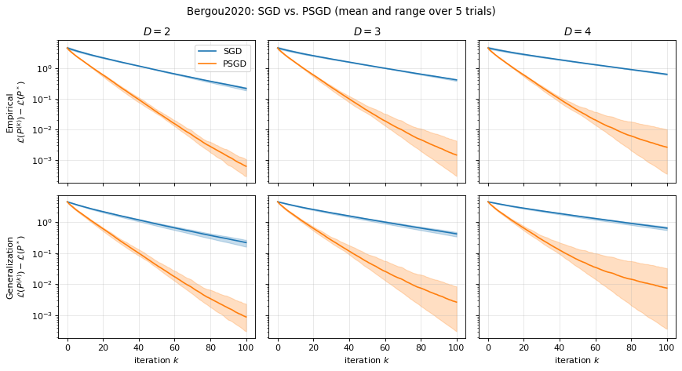
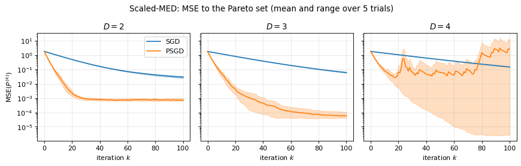

Pareto Set Learning by Stochastic Gradient Descent
torch_bsf.fit() fits a model to data: Pareto-optimal solutions computed
beforehand. When the objective functions themselves are available,
torch_bsf.fit_sgd() fits the model to the Pareto set directly, with the
preconditioned stochastic gradient descent of Hikima et al. [HKT+25].
It works with every model of torch_bsf.simploidal: Bézier simplices,
Bézier simploids and simploidal Bézier spaces (see Simploidal Sets).
The algorithm
Let \(f = (f_1, \ldots, f_M): \mathbb R^L \to \mathbb R^M\) be the objectives and \(b(\mathbf t \mid P) = P^\top \mathbf z(\mathbf t)\) a Bézier simplex of degree \(D\) on \(\Delta^{M-1}\), where \(\mathbf z(\mathbf t)\) is the vector of the Bernstein basis polynomials. The paper minimizes the linear scalarization weighted by the parameter itself, averaged over the simplex:
For strongly convex objectives, the minimizer of \(\mathbf t^\top f(\mathbf x)\) traces the whole Pareto set as \(\mathbf t\) moves on the simplex, so the minimizer of \(\mathcal L\) approximates the Pareto set, parametrized by the weight.
The expectation is replaced by the mean over \(n\) fixed samples \(\mathbf t_1, \ldots, \mathbf t_n\), and the control points are updated on minibatches \(B\) of them:
The preconditioner \(\Sigma^{-1}\) turns the step into the one that
minimizes the linearized loss plus
\(\frac{1}{2\alpha_k}\mathbb E_{\mathbf t}\|b(\mathbf t \mid P) - b(\mathbf t \mid P^{(k)})\|^2\):
it measures how far the surface moves rather than how far its control
points move. The paper proves that this converges faster than plain SGD
(\(\Sigma = I\)), whose steps are distorted by the ill-conditioning of the
Bernstein basis. gram_matrix() computes
\(\Sigma\) exactly, and it is factorized once.
Fitting a Bézier simplex to a Pareto set
The objectives \(f_m(\mathbf x) = \|\mathbf x - \mathbf e_m\|^2\)
(\(m = 1, 2, 3\)) have the triangle spanned by
\(\mathbf e_1, \mathbf e_2, \mathbf e_3\) as their Pareto set, reached at
\(\mathbf x = \mathbf t\). Write the objectives for a batch of points,
wrap them with linear_scalarization(), and pass
an initial model, which fixes the type, the degree and the dimension
\(L\):
import torch
import torch_bsf
from torch_bsf.simploidal import BezierSimploid, linear_scalarization, sample_domain
def objective(x): # (batch, L) -> (batch, M)
return ((x.unsqueeze(1) - torch.eye(3)) ** 2).sum(dim=-1)
init = BezierSimploid.zeros((2,), 2, n_values=3) # a quadratic Bézier triangle in R^3
loss = linear_scalarization(objective)
bs = torch_bsf.fit_sgd(init, loss, n_samples=100, batch_size=20, max_iter=100, step_size=0.2, seed=0)
(t,) = sample_domain(bs, 1000, seed=1) # fresh samples to check generalization
print(torch.allclose(bs(t), t, atol=1e-3))
True
The main options are:
batch_sizeandn_samples: the minibatch size \(m\) and the number \(n\) of fixed samples (or pass your own samples asinputs);step_sizeandstep_decay: a constant step \(\alpha\), or \(\alpha / \sqrt{k + 1}\) withstep_decay="sqrt";preconditioner="none": plain SGD, the baseline of the paper.
The paper uses \(P_0 = O\), \(n = 100\), \(m = 20\), 100
iterations and \(\alpha = 0.05\), which are the defaults except for the
minibatch size (full batch by default). The returned model is a copy, so
init can be reused.
Monitoring the loss and stopping early
Pass callback to watch the fitting. After the update of every iteration
\(k = 0, 1, \ldots\), fit_sgd() calls
callback(k, model, batch_loss), where model is the model being fitted
(already updated) and batch_loss is the mean loss of the minibatch at the
parameters before the update, i.e., \(\mathcal L_B(P^{(k)})\). To
compare the empirical loss on the fixed samples with the generalization loss
on fresh ones, as the paper does, pass the samples as inputs and evaluate
the model on both in the callback, under torch.no_grad():
inputs = sample_domain(init, 100, seed=0) # the samples fit_sgd minimizes on
test_inputs = sample_domain(init, 1000, seed=1) # fresh samples
def mean_loss(model, inputs):
with torch.no_grad():
return loss(model(*inputs), *inputs).mean().item()
history = {"minibatch": [], "empirical": [], "generalization": []}
def record(k, model, batch_loss):
history["minibatch"].append(batch_loss) # at P^(k)
history["empirical"].append(mean_loss(model, inputs)) # at P^(k+1)
history["generalization"].append(mean_loss(model, test_inputs)) # at P^(k+1)
bs = torch_bsf.fit_sgd(init, loss, inputs=inputs, batch_size=20, step_size=0.2, seed=0, callback=record)
print(len(history["empirical"]))
print(history["generalization"][-1] < history["generalization"][0])
100
True
and plot the records, e.g., with matplotlib:
import matplotlib.pyplot as plt
for name, values in history.items():
plt.plot(values, label=name)
plt.xlabel("iteration")
plt.ylabel("loss")
plt.legend()
plt.show()
If the callback returns True, the fitting stops after that iteration and
returns the model updated so far. There is no built-in stopping criterion;
write one in the callback. For example, stop once the empirical loss
decreases by less than \(10^{-6}\) in an iteration:
losses = []
def converged(k, model, batch_loss):
losses.append(mean_loss(model, inputs))
return k > 0 and losses[-2] - losses[-1] < 1e-6
bs = torch_bsf.fit_sgd(init, loss, inputs=inputs, max_iter=1000, step_size=0.2, seed=0, callback=converged)
print(len(losses) < 1000)
True
The callback receives the model being fitted, not a copy: it may evaluate the
model but must not modify it. To keep a snapshot, e.g., of the best model so
far, copy its parameters (model.control_points.detach().clone() for a
Bézier simploid, model.proper_control_points.detach().clone() for a
simploidal Bézier space). The callback does not change the fitting: a
callback that never returns True gives the same model as no callback.
Freezing control points and smoothing
The minimizer of each single objective \(f_m\) is often known in advance.
It is the vertex \(\mathbf t = \mathbf e_m\) of the Pareto set, so you can
put it in the initial model and keep it there with freeze, as in
torch_bsf.fit(). smoothness_weight adds the smoothness penalty
\(w \sum_{(p, q)} \|P_p - P_q\|^2\) over the adjacent control points to the
loss, which keeps the control net of a high degree model from oscillating:
init = BezierSimploid.zeros((2,), 3, n_values=3) # a cubic Bézier triangle
vertices = [(3, 0, 0), (0, 3, 0), (0, 0, 3)]
with torch.no_grad():
for m, vertex in enumerate(vertices):
init[vertex].copy_(torch.eye(3)[m]) # the minimizer of f_m
bs = torch_bsf.fit_sgd(
init, loss, freeze=vertices, smoothness_weight=1e-4, batch_size=20, max_iter=200, step_size=0.2, seed=0
)
print(all(torch.equal(bs[v], init[v]) for v in vertices))
print(torch.allclose(bs(t), t, atol=1e-2))
True
True
The frozen control points keep their values in init bit for bit. For a
Bézier simplex, give their multi-indices (or full indices, as
((3, 0, 0),)); for a Bézier simploid, their indices; and for a
simploidal Bézier space, pairs (simploid, index) of any simploid of the
set and an index of its control net, as in
fit_simploidal_set().
With frozen rows, the step moves only the free rows \(F\) and is preconditioned by the block \(\Sigma_{FF}\) of the Gram matrix rather than by \(\Sigma\), so that it still minimizes the linearized loss plus the move of the surface while the frozen rows stay fixed:
where \(L\) is the Laplacian of the adjacency graph of the control
points, so that the penalty is \(w \operatorname{tr}(P^\top L P)\).
The term \(2 \alpha_k w L_{FF}\) comes from minimizing the penalty
exactly instead of following its gradient. The surface metric
\(\Sigma\) is tiny along oscillating control nets, so
\(\Sigma^{-1} L\) has eigenvalues in the thousands already for a cubic
Bézier triangle, and a plain gradient step on the penalty would diverge
unless \(\alpha w\) were tiny; the exact treatment is stable for every
\(w\). The matrix is factorized once (once per iteration with
step_decay="sqrt" and \(w > 0\)). Without frozen rows and with
\(w = 0\), the step is the one of the paper.
Generalization to simploids and simploidal spaces
Every model of torch_bsf.simploidal is linear in its control points,
model(*inputs) == model.design_matrix(*inputs) @ P, so the algorithm
applies to all of them with \(\mathbf z(\mathbf u)\) the row of the
design matrix and \(\mathbf u\) uniform on the domain of the model:
For a Bézier simploid of type \((a_1, \ldots, a_n)\), \(\mathbf u\) is uniform on the product of simplices, and \(\Sigma\) is the Kronecker product of the Gram matrices of its factors.
For a simploidal Bézier space, \(\mathbf u\) lies on the simploid \(c\) with probability \(w_c\) and is uniform on it, so \(\Sigma = \sum_c w_c S_c^\top \Sigma_c S_c\), where \(S_c\) maps the stored control points to the control net of \(c\). By default the weights are uniform over the main simploids (those that are not a face of another); pass
weightsto change them. They must cover every stored control point, so that \(\Sigma\) is invertible.
The loss is any function loss(values, *inputs) returning one value per
sample, where values is the output of the model and inputs are its
arguments: (t,) for a Bézier simploid and (t, simploid_ids) for a
space (see sample_domain()).
linear_scalarization() needs one parameter per
objective, i.e., a Bézier simplex; on other domains, choose how the
parameters weight the objectives. For example, on a square
\((u_0, u_1) \times (v_0, v_1)\), the weights
\((u_0 v_0, u_0 v_1, u_1 v_0, u_1 v_1)\) of four objectives sweep the
tetrahedron of weights along a bilinear patch:
from torch_bsf.simploidal import gram_matrix
def objective4(x):
return ((x.unsqueeze(1) - torch.eye(4)) ** 2).sum(dim=-1)
def loss4(x, t):
w = (t[:, :2].unsqueeze(2) * t[:, 2:].unsqueeze(1)).flatten(1) # (batch, 4)
return (w * objective4(x)).sum(dim=-1)
init = BezierSimploid.zeros((1, 1), 1, n_values=4)
patch = torch_bsf.fit_sgd(init, loss4, batch_size=20, step_size=0.2, seed=0)
print(torch.allclose(patch.control_points, torch.eye(4), atol=1e-3))
print(gram_matrix(init).shape)
True
torch.Size([4, 4])
A simploidal Bézier space is fitted in the same way; the loss then also receives the index of the simploid of every sample.
From the command line and MLflow
python -m torch_bsf sgd fits a Bézier simplex to the Pareto set of
objectives written in Python, without writing a script. Put the objectives
in a module that can be imported from the current directory (or from an
installed package), e.g. problems.py:
import torch
def objective(x): # (batch, L) -> (batch, M), differentiable with PyTorch
return ((x.unsqueeze(1) - torch.eye(3)) ** 2).sum(dim=-1)
and pass it as --objective=MODULE:FUNCTION with the number \(M\) of
objectives, the number \(L\) of variables and the degree:
python -m torch_bsf sgd \
--objective=problems:objective \
--n-objectives=3 --n-variables=3 --degree=2 \
--n-samples=100 --batch-size=20 --max-iter=100 --step-size=0.2 \
--step-decay=constant --preconditioner=gram --seed=0 \
--meshgrid=meshgrid.csv
It starts from \(P_0 = O\) and minimizes the linear scalarization on a
Bézier simplex on \(\Delta^{M-1}\), as the first example above. The
options --n-samples, --batch-size, --max-iter, --step-size,
--step-decay, --preconditioner and --seed are those of
torch_bsf.fit_sgd(), with the same defaults (each one is also accepted
with underscores, e.g. --batch_size). The outputs follow the data fitting
command python -m torch_bsf:
the control points are saved to
<module>.<function>,control_points,t_<M-1>,d_<N>.csv, or to the file given by--savein the format chosen by its extension;if
--meshgridis a CSV file of parameters (\(M\) columns), the fitted model is evaluated on them and saved to<module>.<function>,meshgrid,t_<M-1>,d_<N>.csv; nothing is evaluated if it is omitted or a directory;unless
--loglevel=0, the options and the final losstrain_loss(the mean loss over the samples) are logged to MLflow, together with the control points file and the model with--loglevel=2(the default), and so is the lossbatch_lossof the minibatch of every iteration, as a metric whose step is the iterationk.
The options of Freezing control points and smoothing and Monitoring the loss and stopping early are also available:
python -m torch_bsf sgd \
--objective=problems:objective \
--n-objectives=3 --n-variables=3 --degree=3 \
--init=control_points.csv \
--freeze='[[3,0,0],[0,3,0],[0,0,3]]' \
--smoothness-weight=0.01 \
--log-every=10
--initstarts from the control points of a file saved bytorch_bsf.simploidal.save()(e.g., by--saveof an earlier run) instead of \(P_0 = O\). It must be a Bézier simplex of dimension \(M - 1\), the degree--degreeand \(L\) values; otherwise, the command stops with an error message.--freezekeeps the control points of the given multi-indices at their values in--init, which it requires, in the JSON-style format of--freezeofpython -m torch_bsf. Above, the vertices of the triangle stay at the minimizers of the single objectives written incontrol_points.csv.--smoothness-weight(also--smoothness_weight) issmoothness_weightoffit_sgd()(default0.0), which must be non-negative.--log-everythins outbatch_lossto every \(N\)-th iteration (default1), and--log-every=0logs onlytrain_loss. The loss is recorded bycallbackand logged to MLflow in a batch after fitting; it is that of the minibatch before the update, without the smoothness penalty.
Before fitting, the objective is evaluated on two points to check that it
maps (batch, L) to differentiable values of shape (batch, M); an
objective that cannot be imported or does not match --n-objectives and
--n-variables stops the command with an error message. Run
python -m torch_bsf sgd --help for all the options.
The sgd entry point of MLproject runs the same command:
mlflow run https://github.com/opthub-org/pytorch-bsf \
-e sgd \
-P objective=problems:objective \
-P n_objectives=3 \
-P n_variables=3 \
-P degree=2 \
-P batch_size=20 \
-P step_size=0.2
The command runs in the directory of the project, so the module of the
objectives must be installed in the environment of the run or found on its
PYTHONPATH (with --env-manager=local, set PYTHONPATH to the
directory of problems.py). The parameters meshgrid (default .,
i.e., no meshgrid), n_samples, batch_size (default "", i.e., the
full batch), max_iter, step_size, step_decay, preconditioner,
seed (default "", i.e., none), init and freeze (default "",
i.e., none), smoothness_weight and log_every are also exposed, e.g.,
-P init=/path/to/control_points.csv -P freeze='[[2,0,0],[0,2,0],[0,0,2]]'
(give init as an absolute path, since the command runs in the directory of
the project).
The command line fits Bézier simplices with the linear scalarization only;
for Bézier simploids, simploidal Bézier spaces or other losses, use
torch_bsf.fit_sgd() from Python.
Benchmarks: SGD vs. PSGD
The script examples/sgd_benchmarks.py reproduces the experiments of
Section 5 of Hikima et al. [HKT+25] with fit_sgd(),
comparing plain SGD (preconditioner="none") with the preconditioned SGD
of the paper (PSGD, preconditioner="gram"). The problems are implemented
from their definitions in the paper:
Bergou2020 [BDK21] (\(M = 2\), \(L = 2\)): \(f_1(\mathbf x) = (x_1 - 1)^2 + (x_1 - x_2)^2\) and \(f_2(\mathbf x) = (x_2 - 3)^2 + (x_1 - x_2)^2\).
Scaled-MED (\(M = 3\), \(L = 3\)): \(f_1(\mathbf x) = x_1^2 + 3(x_2 - 1)^2 + 2(x_3 - 1)^2\), \(f_2(\mathbf x) = 2(x_1 - 1)^2 + x_2^2 + 3(x_3 - 1)^2\) and \(f_3(\mathbf x) = 3(x_1 - 1)^2 + 2(x_2 - 1)^2 + (x_3 + 1)^2\).
Skew-MMD (\(M = 3\), \(L = 3\)): \(f_i(\mathbf x) = \|A_i(\mathbf x - \mathbf e_i)\|_2^{p_i}\) with \(A_1 = \operatorname{diag}(3/5, 4/5, 4/5)\), \(A_2 = \operatorname{diag}(4/5, 3/5, 4/5)\), \(A_3 = \operatorname{diag}(4/5, 4/5, 3/5)\) and \(p_i = \exp(2(i - 1)/(M - 1) - 1)\).
Location problem (\(M = 3\), \(L = 4\)): \(f_i(\mathbf x) = \|\mathbf x - \mathbf e_i\|_2^2\), whose Pareto set is the triangle spanned by \(\mathbf e_1, \mathbf e_2, \mathbf e_3\).
The settings are those of the paper: \(P_0 = O\), \(n = 100\) samples,
minibatches of \(m = 20\), \(K = 100\) iterations with the constant
step size \(\alpha = 0.05\), the degrees \(D \in \{2, 3, 4\}\), and 5
trials with different samples, SGD and PSGD sharing the samples of a trial.
The losses are recorded with callback as in
Monitoring the loss and stopping early: the empirical loss on the
\(n\) samples and the generalization loss on 10,000 other samples. The
script plots with matplotlib and SciPy, which the plot extra installs. In
a clone of the repository, run
pip install -e ".[plot]"
python examples/sgd_benchmarks.py
to write the figures below to docs/_static/; it takes less than a minute
on a CPU.
For Bergou2020, Scaled-MED and the location problem, the objectives are quadratic, so \(\mathcal L(P)\) is a quadratic function of the control points, and the script computes its minimizer \(P^*\) over the Bézier simplices of degree \(D\) exactly (by Newton’s method, on the \(n\) samples for the empirical loss and on the 10,000 samples for the generalization loss). The figures show the optimality gap \(\mathcal L(P^{(k)}) - \mathcal L(P^*)\), the mean over the trials as a line and the range as a band:


Fig. 14 Bergou2020: the optimality gap of the empirical (top) and generalization (bottom) losses.

Fig. 15 Scaled-MED: the optimality gap of the empirical (top) and generalization (bottom) losses.

Fig. 16 Location problem: the optimality gap of the empirical (top) and generalization (bottom) losses.
The skew-MMD has no closed-form solution, so its figure shows the loss \(\mathcal L(P^{(k)})\) itself:

Fig. 17 Skew-MMD: the empirical (top) and generalization (bottom) losses.
PSGD decreases both losses much faster than SGD on every problem, with one exception discussed below. After 100 iterations, its optimality gap is two to five orders of magnitude smaller (e.g., \(6 \times 10^{-4}\) against \(2 \times 10^{-1}\) for Bergou2020 with \(D = 2\)), and the generalization loss follows the empirical one. The higher the degree, the slower SGD gets, because the Bernstein basis gets more ill-conditioned: the condition number of \(\Sigma\) of a Bézier triangle is 15, 56 and 210 for \(D = 2, 3, 4\). PSGD removes this dependence in its first iterations, which decrease the loss at almost the same rate for every degree, as the paper reports.
The exception is Scaled-MED with \(D = 4\): the gap of PSGD jumps up
during the iterations in two of the five trials, so that its mean ends above
that of SGD, although PSGD is ahead in the first 20 iterations and in the
other three trials. The paper proves the convergence of minibatch PSGD for
step sizes up to a bound proportional to
\(1 / \lambda_{\max}(\Sigma^{-1})\), which shrinks as the degree grows
(\(\lambda_{\max}(\Sigma^{-1})\) of a Bézier triangle is 90, 560 and 3150
for \(D = 2, 3, 4\)), and \(\alpha = 0.05\) is apparently beyond it
here: a minibatch whose samples miss part of the triangle gets its gradient
amplified along the directions where \(\Sigma\) is small. With \(\alpha = 0.03\), all
five trials converge. If the loss of PSGD jumps up, decrease step_size,
use step_decay="sqrt", or enlarge batch_size.
The other figures show the Pareto set and front approximated by PSGD after 100 iterations, in the trial of the median final empirical optimality gap (empirical loss for the skew-MMD), with the control points (red) and, where known, the boundary of the true Pareto set and front (dotted). For the location problem, the Pareto set lies in \(x_4 = 0\) and is drawn in \((x_1, x_2, x_3)\).

Fig. 18 Bergou2020: the approximated Pareto set (top) and front (bottom). The true ones are given by \(x_1^*(\mathbf t) = (t_1^2 + t_1 - 3) / (t_1^2 - t_1 - 1)\) and \(x_2^*(\mathbf t) = (3t_1^2 - t_1 - 3) / (t_1^2 - t_1 - 1)\).

Fig. 19 Scaled-MED: the approximated Pareto set (top) and front (bottom).

Fig. 20 Location problem: the approximated Pareto set (top) and front (bottom).

Fig. 21 Skew-MMD: the approximated Pareto set (top) and front (bottom).
On Bergou2020, the end points of the curve, which correspond to the vertices of the simplex that uniform samples of \(\mathbf t\) rarely approach, converge the slowest. On the skew-MMD, \(f_1\) is not convex (\(p_1 = e^{-1} < 1\)), so the minimizers of the linear scalarization \(\mathbf t^\top f(\mathbf x)\) need not trace the Pareto set smoothly, and the fitted surface is only a local minimizer of \(\mathcal L\); the paper uses this problem only for the convergence comparison.
The last figures correspond to Figure 4 of Hikima et al. [HKT+25]: they compare how close the approximated Pareto set gets to the true one, by the mean squared error of Section 5.3 of the paper,
where \(\mathbf x^*(\mathbf t)\) is the minimizer of
\(\mathbf t^\top f(\mathbf x)\) given in closed form above and
\(\mathbf t_1, \dots, \mathbf t_N\) are the \(N = 10{,}000\) samples of
the generalization loss. It is recorded at
\(P^{(0)}, \dots, P^{(K)}\) in the same callback under
torch.no_grad(); at \(P^{(0)} = O\), it is the mean of
\(\|\mathbf x^*(\mathbf t_i)\|_2^2\). The script draws the MSE of the
location problem and Scaled-MED, as the paper does, and of Bergou2020, whose
Pareto set is also known. As in the other figures, the band is the range over
the 5 trials, whereas the paper shows a 95% confidence interval.

Fig. 22 Location problem: the MSE to the true Pareto set.


Fig. 23 Scaled-MED: the MSE to the true Pareto set.

Fig. 24 Bergou2020: the MSE to the true Pareto set.
The MSE follows the optimality gap. For the location problem, \(\mathbf t^\top f(\mathbf x) = \|\mathbf x - \mathbf x^*(\mathbf t)\|_2^2 + 1 - \|\mathbf x^*(\mathbf t)\|_2^2\) on the simplex, so the MSE equals the generalization optimality gap; \(\mathbf x^*\) is linear in \(\mathbf t\) and the MSE of PSGD keeps decreasing towards zero (to \(2 \times 10^{-6}\) after 100 iterations with \(D = 2\), against \(6 \times 10^{-2}\) for SGD). For Scaled-MED and Bergou2020, \(\mathbf x^*\) is a rational function that a Bézier simplex of degree \(D\) cannot represent exactly, so even the minimizer \(P^*\) of the generalization loss has a positive MSE, which decreases with the degree (\(6 \times 10^{-4}\), \(3 \times 10^{-5}\) and \(2 \times 10^{-6}\) for Scaled-MED with \(D = 2, 3, 4\)). The MSE of PSGD for Scaled-MED with \(D = 2\) levels off near this floor after about 30 iterations, while SGD is still two orders of magnitude above it. The divergence of PSGD in two trials of Scaled-MED with \(D = 4\) discussed above shows up in the MSE as well: the mean MSE of PSGD ends at 2.6, above the 0.15 of SGD, because one trial ends at 13 and another rises from \(3 \times 10^{-4}\) to \(2 \times 10^{-3}\), whereas the other three trials end below \(10^{-3}\).